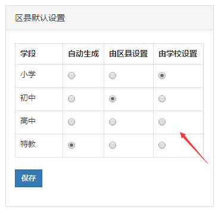

设置新生学籍副号生成规则
功能描述
区管理员通过该设置，配置各个学段学生的学籍副号如何生成，系统提供三种生成方式，分为自动生成、区县设置和学校设置，您只可选择其中一种。
注意：已生成学籍的新生数据不可再修改。
- 当您选择 “由区县设置”时，区县管理员需在【新生管理-新生列表】中导入学籍副号，请确保导入的学籍副号符合学校学籍副号规则。
- 当您选择“由学校设置”时，学校管理员需在【新生管理-新生列表】中导入学籍副号，请确保导入的学籍副号符合学校学籍副号规则。。
- 当您选择“自动生成”时，系统将自动为您判断是否存在学生已有学籍副号，如有您将收到“是否放弃已有学籍副号，全部自动生成”的提示。
- 当您选择“是”，所有学籍副号，全部重新生成
- 当您选择“否”，这批学生的学籍副号将不被更新
操作步骤
第一步，进入新生管理->新生设置。
第二步，选择您要设置的学段和生成规则。
第三步，点击“保存”提交设置。